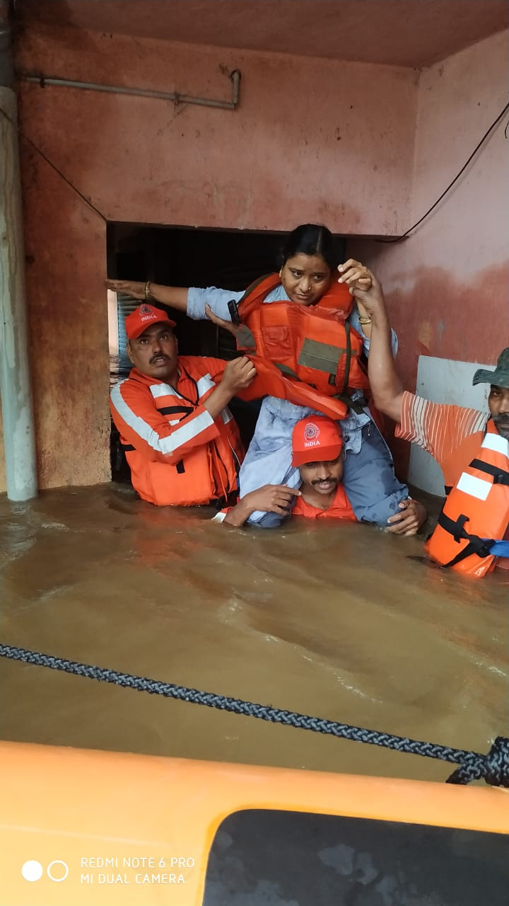

System Status
24/7 MonitoringHigh-frequency satellite radar feeds, ground observer telemetry, and public safety broadcast channels are actively synchronized with disaster management authorities.
GeoNetra unifies crowdsourced citizen reporting, AI-assisted bilingual telemetry, and live geospatial tracking across monitored coastlines, waterways, and urban clusters to provide actionable situational awareness when conditions change.
| Location | Hazard Type | Severity | Time | Status |
|---|---|---|---|---|
| Mumbai Coast | Coastal Flooding | High Risk | 10 mins ago | Active |
| Chennai Harbor | Cyclone Warning | Medium | 2 hours ago | Monitoring |
| Kerala Backwaters | Algal Bloom | Low Risk | 5 hours ago | Resolved |
| Goa Shoreline | Oil Spill Traces | Medium | 1 day ago | Active |
High-frequency satellite radar feeds, ground observer telemetry, and public safety broadcast channels are actively synchronized with disaster management authorities.
Pinpoint active incidents, filter by hazard severity, and scan radar.
A cohesive multi-layer system engineered for emergency response units, field observers, and citizens.
Real-time incident mapping powered by OpenStreetMap, interactive clustering, and multi-tier severity markers covering coastal and inland zones.
Gemini 2.5 Flash intelligence digests unstructured field reports into concise, verified summaries in English, Hindi, and local vernaculars.
Authoritative preparedness guidance for cyclones, flash floods, landslides, and chemical incidents with 24/7 emergency dispatch directory.
MapTiler 3D spherical Earth projection modeling Eulerian wind stream particles, RainViewer radar, and live telemetry hazard pins.
Real accounts of courage, preparedness, and coordinated action that saved lives during severe crises.

August 2019During severe floods, specialized rescue squads and local volunteers navigated violent river surges to safely evacuate stranded families from submerged villages.
Open Safety Advisories May 2020
May 2020
Early meteorological warnings combined with community evacuation protocols enabled coastal villages to relocate vulnerable residents before landfall.
View Incident Analytics December 2023
December 2023
Volunteer teams transformed community centers into 24/7 relief kitchens, preparing thousands of nutritious meal packets daily for response crews and citizens.
Open Live Map